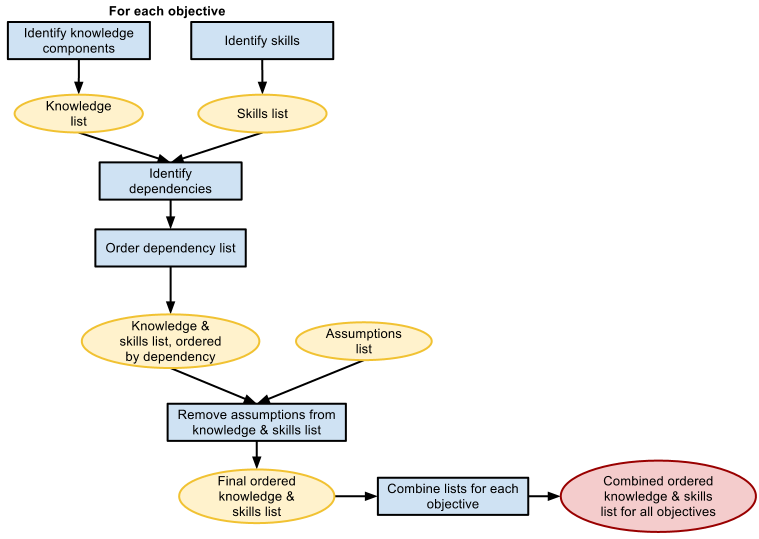

En “desarrollar el
contenido sin la tecnología”, hablamos
de la importancia de crear fuertes objetivos medibles. Pero,
¿qué sigue? La transición entre la creación de objetivos y el desarrollo a
veces puede ser un desafío. Vamos a ver una técnica para simplificar todo
esto.
Unir sus
objetivos a las habilidades específicas o piezas de conocimiento es la forma
más fácil de estructurar el material de aprendizaje. Coja
los objetivos de su curso y colóquelos en la parte superior de una
jerarquía. Pregúntate a ti mismo lo que se necesitarían sus estudiantes
para llevar a cabo con éxito este objetivo. ¿Qué cosas que necesitan
saber? ¿Qué cosas tienen que ser capaces de hacer?
Usted se estará
preguntando: "¿Cuál es la diferencia entre el conocimiento y las
habilidades?" En la práctica los conocimientos y las habilidades son cosas
que se aprenden. La principal
diferencia es la profundidad a la que se toma ese aprendizaje. Un componente de información es
típicamente un conocimiento más general, pero puede ser visto como una pieza
fundamental en la cual construir otro aprendizaje. Un componente de
habilidad se lleva a un
nivel más profundo, para que puedan participar activamente y hacer algo
tangible con el aprendizaje. Como un ejemplo:
- Conocimiento: Describir un
sistema de lenguaje orientado a objetos.
- Dificultad: Construir una
función de trabajo en Java.
Piense en
qué nivel de cada uno de sus objetivos y toma anotaciones en ellos, ya sea como
un objetivo de conocimiento o habilidad. Se
utiliza esta anotación en lo que sigue para organizar sus objetivos en un flujo
de aprendizaje coherente.

Si usted
tiene múltiples objetivos, separarlos y realizar estos pasos por separado para
cada uno:
- Haga una lista
de cada pieza de conocimiento que un estudiante necesita saber para
completar el objetivo.
Algunos de los
componentes de conocimiento se puede repetir de los supuestos realizados
durante la fase de
planificación.
- Haga una lista
de cada cosa que el estudiante debe ser capaz de hacer para completar el
objetivo.
Una vez que haya
identificado algunas de estas habilidades durante el proceso de
planificación lo puede incluir en sus suposiciones. Esto hace que sea fácil saber dónde
tienes que crear el contenido y lo que asume que el estudiante trae
consigo.
- Identificar las
dependencias entre los componentes del conocimiento y las habilidades
necesarias.
- ¿Hay algo que debe saber antes
de que puedan adquirir una habilidad?
- ¿Hay ciertas habilidades que
deben aprender primero para comprender mejor una habilidad más tarde?
- ¿Existen habilidades y
conocimientos que son complementarios, es decir, aquellas que ayuden al
alumno más fácilmente a aprender o adquirir habilidades?
- ¿Existen dependencias del
conocimiento?
- ¿Existen dependencias de
habilidad?
- Reorganizar la
lista para que las dependencias se enumeran en orden.
- Revise los
supuestos de la fase de planificación.
- ¿Su lista contiene
los conocimientos que el estudiante debe saber antes de tomar tu curso?
- ¿Su lista contiene
habilidades que un estudiante debe tener antes de tomar el curso?
- Ahora debería tener una lista
de piezas de conocimientos y habilidades que un estudiante necesita
para completar con éxito su objetivo.
- Repita el
procedimiento para cada objetivo.
- Una vez que haya completado los
pasos de proceso por cada objetivo, comparar las listas de cada
objetivo y fíjese en lo siguiente:
- Algunas habilidades
y piezas de conocimiento puede ser comunes a través de diferentes
objetivos.
- Hacer una
verificación cruzada de dependencias entre los distintos trozos y los
objetivos y organizarlos como elementos de una manera lógica.
- Combine las
listas.
- ¿Existen componentes de
conocimiento que trascienden los diferentes objetivos?
- ¿Existen habilidades
complementarias que atraviesan diferentes objetivos?
- ¿Existen otras dependencias en
el aprendizaje de la materia y la adquisición de las habilidades?
- Identificar estos y
hacer una última reorganización de su lista. Combina elementos cuando sea necesario. Eliminar las piezas repetidas.
Este texto es una traducción de las páginas Wiki del
manual de Course Builder